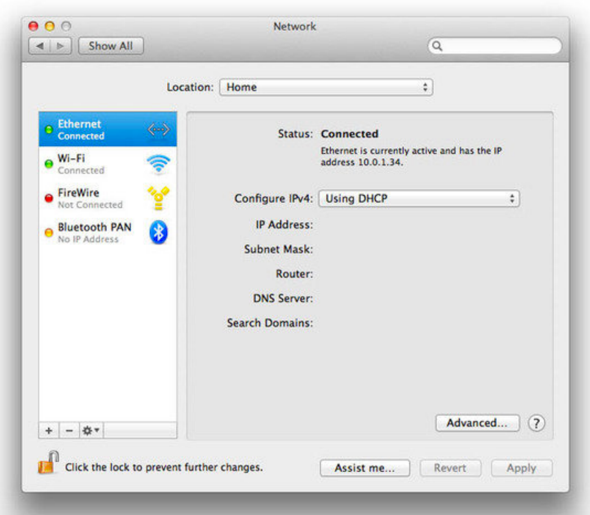
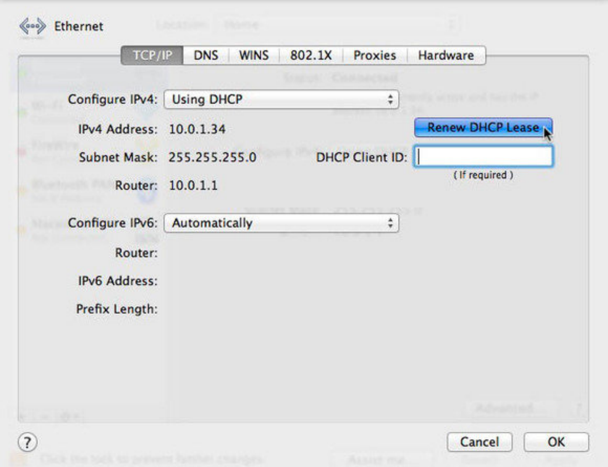
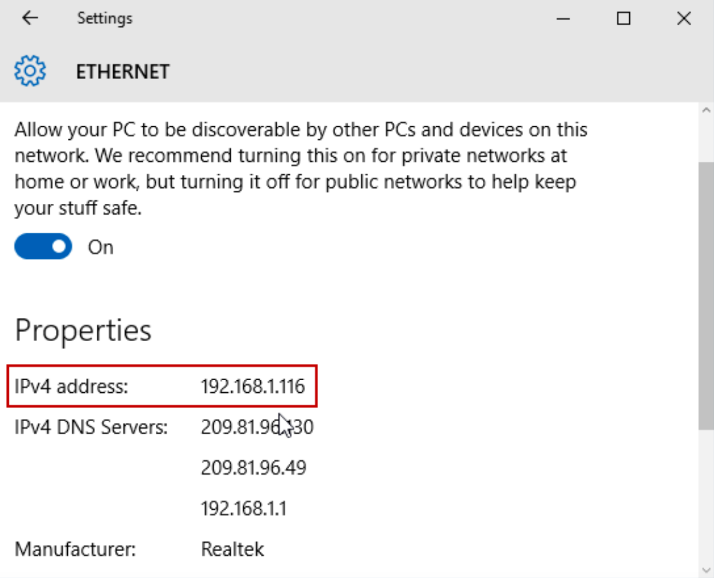
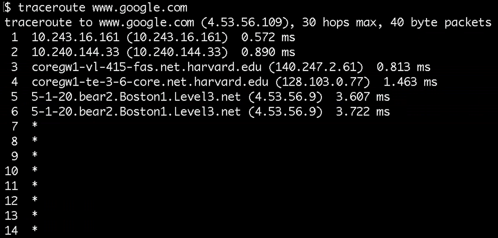
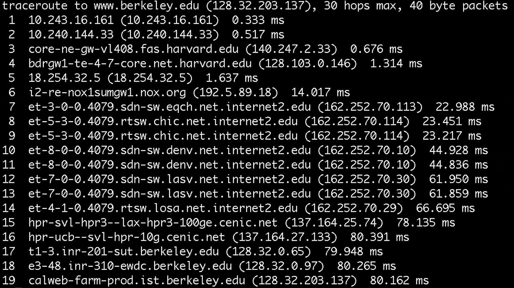
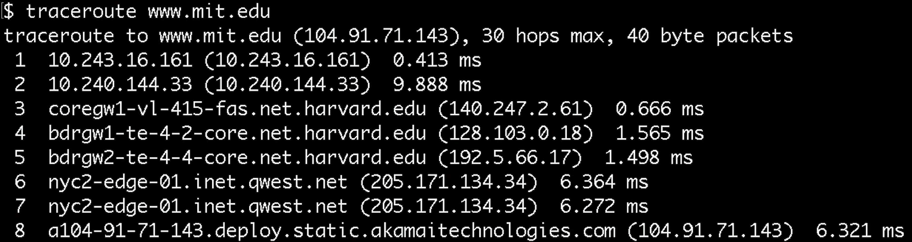
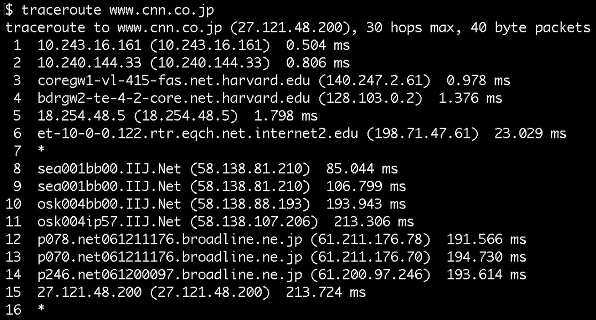

互联网
by Spencer Tiberi
Introduction
- We use the 互联网 on a daily basis and have constant access and connectivity
-
首页 network
- Cable modem, DSL modem, or FIOS device
- Connects to the 互联网
- Pay monthly for an ISP (互联网 Service Provider)
- Verizon, Comcast, etc.
- Could have built in wireless connectivity for your devices
- 五月 need an additional 首页 router
- Devices connect to a router via cables or wifi
- 五月 need an additional 首页 router
- Cable modem, DSL modem, or FIOS device
IP
- Every computer on the 互联网 has an IP (互联网 Protocol) address
- Of the form #.#.#.#
- Four numbers separated by dots of the values 0-255
- Other IP address formats exist today as well
- Like postal addresses, they uniquely identify computers on the 互联网
- Any device connected to the 互联网 has an IP address
- Allows other computers to talk to it
- Any device connected to the 互联网 has an IP address
- Of the form #.#.#.#
- ISPs assign a IP address to your computer (router)
- Used to be physically configured
- DHCP (Dynamic Host Configuration Protocol)
- Software that ISPs provides to allow your computer to request an IP address
- DHCP servers respond with a specific IP address for your 首页
- Multiple devices can connect to your 首页 network
- The 首页 router supports DHCP and assigns IP addresses to your devices
DNS
- We access websites using domain names (Facebook.com, Google.com, etc.), but it turns out that these sites too have IP addresses
- DNS (Domain 姓名 System) servers convert domain names into IP addresses
Packets
- Computers communicate by sending packets, which are like virtual envelopes sent between computers
- Ultimately still 0s and 1s
- As an analogy, suppose we want to find a cat image on the 互联网
- So, we send a request to a server, say Google, like “get cat.jpg”
- We place this request in an envelope
- On the envelope, we list out IP as the return address
- However, for the recipient of the request, we don’t know the IP address for Google
- Have to rely on DNS
- Send a request to our ISPs DNS server for Google’s IP address
- If the ISP’s DNS server doesn’t know a website’s IP address, it has been configured to ask another DNS server
- There exist root servers that know where to look to for an IP address if it exists
-
After sending the request off, we’ll get a response ms later
- The cat will be sent 返回 in one or 更多 packets
- If the cat image is too large for a single envelope, sending it in one packet could take up 互联网 traffic
- To solve this, Google will divide the cat image into smaller fragments
- Put the fragments into different envelopes
- Write information on the envelopes
- Return address: Google’s IP address
- Delivery address: Our IP address
- List the number of packets on each envelope (1 of 4, 2 of 4, etc.)
TCP/IP
- IP goes beyond addresses
- Set of conventions computers and servers follow to allow intercommunication
- Fragmentation like in the envelope 示例 are supported by IP
- If missing a packet, you can logically infer which packet you’re missing based on the ones received
- However, IP doesn’t tell computers what to do in this case
- If missing a packet, you can logically infer which packet you’re missing based on the ones received
- TCP (Transmission Control Protocol) ensures packets can get to their destination
- Commonly used with IP (TCP/IP)
- Supports sequence numbers that help data get to its destination
- When missing a packet, a computer can make a request for the missing packet
- The computer will put packets together to get a whole file
- Also includes conventions for requesting services (port identifiers)
- To make sure Google knows we’re requesting a webpage and not an 电子邮件 or other service
Ports
- Per TCP, the 世界 has standardized numbers that represent different services
- If 5.6.7.8 is Google’s IP address, 5.6.7.8;80 (port 80) lets use know that we want a webpage
- 80 means http (hypertext transfer protocol)
- The language that web servers speak
- Google will send the request to their web server via http
- 80 means http (hypertext transfer protocol)
- Many websites use secure connections with SSL or HTTPS, which uses the port 443
- 电子邮件 uses port 25
- Other ports exist as well
Protocols
- Protocols are just sets of rules
- Humans use these all the 时间, such as the protocol for meeting people: handshakes
- When a request is made to Google for an image, HTTP tells Google how to respond appropriately
UDP
- User Datagram Protocol
- Doesn’t guarantee delivery
- Used for 视频 conferencing such as FaceTime
- Packets can be dropped for the sake of keeping the conversation flowing
- Used anytime you want to keep data coming without waiting for a buffer to fill
IPs in 更多 Detail
- IP addresses are limited
- In the format #.#.#.#, each number is 8 bits, so 32 bits total
- This yields 232 or 关于 4 billion possible addresses
- We’re running out of addresses for all computers
- This yields 232 or 关于 4 billion possible addresses
- Current version of addresses is IPv4
- Moving towards IPv6
- Uses 128 bits, yielding 2128 possible addresses
- In the format #.#.#.#, each number is 8 bits, so 32 bits total
- How do you find your IP address?
-
On a Mac, go to system preferences an poke around a bit

- Private addresses exist
- 10.#.#.#, 192.168.#.#, or 172.16.#.#
- Only with special configuration can someone talk to your computer
- Your personal device is not a server, so people should not need to access them directly
- Your device needs to request data from servers
- Even 电子邮件 is stored on a server such as Gmail and your device makes a request to that server to access that 电子邮件
-
Looking 在 advanced settings…

- Subnet mask is used to decide if another computer is on the same network
- Router (aka Gateway) has its own address
- Routs data in different directions
-
On windows:

- Shows DNS servers as well
Routers
- Routers have bunches if wires coming and going out of them
- They have a big table with IP addresses and where data should be routed to get to that destination
- Often, the data is routed to some 下一页 router
- They have a big table with IP addresses and where data should be routed to get to that destination
- Routers purpose is to send data in the direction of a destination
- The 下一页 router will send it to another until it reaches a destination
- The 互联网 is a network of networks (with their own routers)
- Often multiple ways to go from A to B
- Based in US Military logic to prevent downtime if a particular router goes down
- When multiple packets are sent, like cat.jpg from Google, they can each take a different path, still getting to their destination eventually
- Sometimes the 互联网 is busy and the quickest path changes
- Often multiple ways to go from A to B
Traceroute
- How long does it take for this process of data transfer to take on the 互联网?
- Traceroute is a program that sends packets to each router on a path to a destination, reporting the 时间 it takes to reach that router
-
From Sanders Theatre to Google.com:

- 1-2: A few unnamed routers 在 Harvard
- 3-4: 更多 Harvard routers
- 5-6: Level3 is a ISP
- 7+: The routers are denying the request
-
From Sanders Theatre to Berkeley.edu

- 6: Northern Crossroads
- 7-14: A fast connection
- 8-9: Chicago
- 10-11: Denver
- 12-13: Las Vegas
- 14: Los Angeles
- 19 is where it arrives 在 Berkeley in 80 ms!
-
From Sanders Theatre to MIT.edu

- 6-7: Goes to 新内容 York connectivity
- 8: MIT’s website is outsourced to Akamai’s NYC servers
-
From Sanders Theatre to CNN.jp

- 9-10 jumps from Seattle to Osaka past an ocean!
- Using undersea cabling
- 9-10 jumps from Seattle to Osaka past an ocean!
Undersea Cabling
- David shows a 视频 关于 undersea cables
Cable Modem Demo
- David examines a 首页 cable modem, focusing on its ports
- Coaxial cable to plug into the wall
- 电话 jacks (RJ11) as many services are bundled together these days
- Four jacks for ethernet cables (RJ45)
- Devices can plug into these for 互联网 connectivity
- This modem has wifi support built in
Network Switch Demo
- David examines a network switch
- A device that you can plug into your router to allow 更多 connections for all your other devices
首页 Router Demo
- David examines a 首页 router
- 首页 routers can have wifi, firewall, and switching capabilities
Network Cable Demo
- David cuts 打开 a network ethernet cable to examine its inner workings
- Inside a network cable are 8 wires of different colors
- Some are for transmitting data, others for receiving data
- Others still are for insulation and cancellation of interference
Closing Thoughts and Homework
- For homework, find a device that looks like a modem or router and take a look 在 the connectors on the 返回 of it
- If brave, play around with unplugging cables
- 笔记: Your 互联网 五月 go down in the process, but can be easily restarted with the cables properly reconnected!
- If you have a spare ethernet cable, take a look inside yourself
- These are a bit harder to put 返回 together!
- If brave, play around with unplugging cables